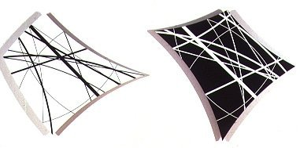
| Number theory index | History Topics Index |
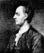
click here for a full history and biography
of Euler
The first mathematician that we shall look at is Euler. He introduced beta and gamma functions, and integrating factors for differential equations.
In 1755 Euler published Institutiones calculi differentialis
which begins with a study of the calculus of finite differences. The work
makes a thorough investigation
of how differentiation behaves under substitutions.
In Institutiones calculi integralis (1768-70) Euler made a thorough
investigation of integrals which can be expressed in terms of elementary
functions. He also
studied beta and gamma functions, which he had introduced first in
1729. They were given the names beta function and gamma function
by Binet and Gauss respectively. As well as investigating double integrals,
Euler considered ordinary and partial differential equations in this work.
Problems in mathematical physics had led Euler to a wide study of differential
equations. He considered linear equations with constant coefficients, second
order
differential equations with variable coefficients, power series solutions
of differential equations, a method of variation of constants, integrating
factors, a method of
approximating solutions, and many others. When considering vibrating
membranes, Euler was led to the Bessel equation which he solved by introducing
Bessel
functions.
1. One of the major contribution of Euler was introduction of Gamma function. The gamma function defined by an integral is as follows:
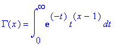
The gamma junction is a generalization of the factorial. In fact, it has the following properties:
(1)
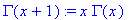
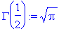
A useful identity of the gamma fuction is
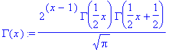
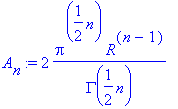
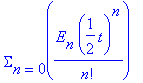
or by the formula:
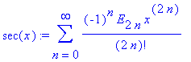
All of the odd Euler numbers are 0. The Euler numbers with
odd subscripts vanish: E2k+1 =0 for all k >0.
The non-zero Euler number are odd integers which alternate in sign.
The first few non-zero Euler numbers are: E0 =1,
E2 =-1, E4 =5, E6
=-61, E 8 =1385, E10 =-50521,
E12 =2702765.
These Euler numbers, along with the Bernoulli numbers are helpful when
attempting to approximate the Taylor series for complex functions involving
the secant, tangent, and others that do not have simple formulas.
An example of the accompaning Bernoulli number is:
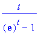
which equals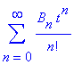
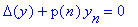
or simply, .
In the field of mathematics he worked on probability, recurring decimals
and the theory of equations.
The third mathematician we shall discuss is Laplace.
Click on Laplace's picture if you would like
to read his full biography.
One of Laplace's great works is the Traité du Mécanique
Céleste published in 5 volumes, the first two in 1799.
The first volume of the Mécanique Céleste is divided
into two books, the first on general laws of equilibrium and motion of
solids and also fluids, while the secondbook is on the law of universal
gravitation and the motions of the centres of gravity of the bodies in
the solar system. The main mathematical approach here is the setting up
of differential equations and solving them to describe the resulting motions.
In this Laplace also developed the idea of the potential, which was appropriated
from
Lagrange (visit
location),who had used it in his memoirs of 1773, 1777 and 1780.
Laplace showed that
the potential always satisfies the differential equation :
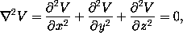
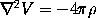
The last mathematician we shall mention is Gaspard Monge.
click on his picture for his biography.
Starting in 1771 and then over the next few years Monge submitted a
series of important papers to the Académie on partial
differential and finite difference equations equations which
he studied from a geometrical point of view.
He is considered the father of differential geometry because
of his work Application de l'analyse à la géométrie
where he introduced the concept of lines of curvature of a surface in 3-space.
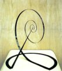